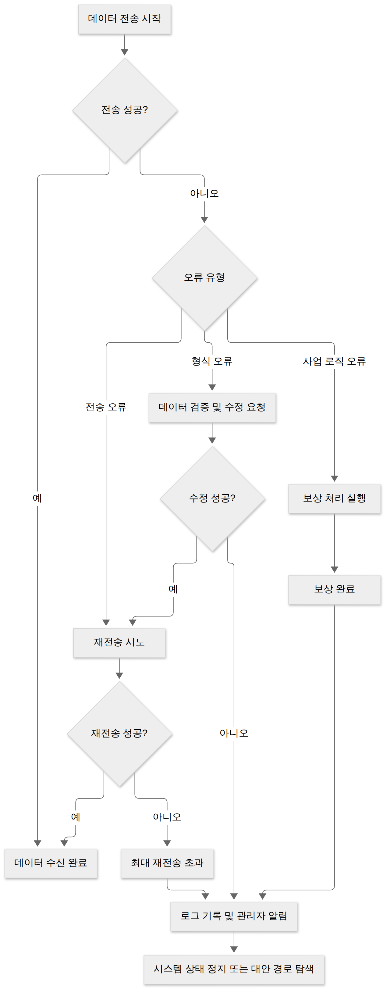

D017 · 인터페이스 상세 설계 — 송수신 방식·데이터 명세화·오류 처리방안·미들웨어
A4 어제까지 A4에서 인터페이스 요구사항 확인과 대상 식별을 봤어요. 오늘은 그 결과를 바탕으로 세부 설계를 진행해요. 인터페이스가 실제로 어떻게 작동하는지, 데이터는 어떤 형식으로 주고받는지, 오류는 어떻게 처리하는지, 그리고 중간에 어떤 도우미 역할을 하는지 살펴볼 거예요.
- 인터페이스의 송수신 방식(동기/비동기, 직접/간접 연계)을 상황에 맞게 구별할 수 있다
- 인터페이스 데이터 명세(항목명·형식·길이·코드값 등)를 왜 쓰고 어떤 순서로 작성하는지 설명할 수 있다
- 인터페이스 오류 처리방안(오류 유형 식별, 재전송·보상 처리, 로그·알림)을 설명하고 오류 상황에 맞는 조치를 고를 수 있다
- 미들웨어의 역할과 종류(MOM·RPC·ORB·WAS·TP-Monitor·DB 미들웨어)를 정의로 구별할 수 있다
- 앞서 배운 내부·외부 인터페이스와 상세 설계 단계를 한 흐름으로 연결해 설명할 수 있다
직접 연계는 집에 직접 전화해서 대화하는 것이고, 간접 연주는 중간에 교환원을 거치는 것—따라서 속도와 복잡성이 trade-off됩니다.
1. 인터페이스 설계 흐름과 상세 설계 위치
이 흐름을 요리 과정에 비유하면, 재료 확인(요구사항 확인)과 재료 손질(대상 식별)을 마치고 finally 레시피를 따라 cooking(상세 설계) 하는 셈이죠.
인터페이스 설계는 요구사항 확인 → 대상 식별 → 상세 설계 → 구현 순으로 진행됩니다. 상세 설계에서는 어떻게 인터페이스를 구현할지 구체적으로 정해요. 오늘은 이 상세 설계 단계에서 다루는 4가지 세세항목을見ていきます.
2. 송수신 방식
직접 연계는 집 앞에서 직접 만나서 대화하는 것이고, 간접 연주는 우체국을 통해 편지를 주고받는 것처럼 중간에 중계소가 들어갑니다.
인터페이스에서 데이터를 주고받는 방식은 크게 연계 방식과 동기화 방식으로 구분됩니다.
- 연계 방식
- 직접 연계: 두 시스템이 직접 연결되어 통신
- 간접 연계: 중계 시스템을 통해 통신 (예: 미들웨어 사용)
- 동기화 방식
- 실시간(동기): 요청과 응답이 즉시 이루어짐
- 배치(비동기): 데이터를 모아 주기적으로 전송
이러한 방식은 시스템의 특성과 요구사항에 따라 선택됩니다.
- 장점: 지연 낮음, 구조 간단
- 단점: 결합도 높음, 확장성 낮음
- 장점: 결합도 낮음, 확장성 좋음
- 단점: 지연 발생 가능, 중계점 필요
- 장점: 즉시 처리, 데이터 일관성
- 단점: 응답 대기 시간, 피크 시 과부하
- 장점: 시스템 부하 분산, 피크 대응
- 단점: 데이터 최신성 낮음, 오류 감지 지연
3. 데이터 명세화
필드 이름을 '이름'이라고만 해놓으면 받는 쪽이 '이름이 뭐야?'라고 물어봐서 데이터를 버리게 됩니다—따라서 상세한 명세가 필수예요.
인터페이스를 통해 주고받는 데이터의 의미를 명확히 하기 위해 데이터 명세를 작성합니다.これにより、受信側がデータを正しく 해석할 수 있습니다.
데이터 명세의 구성 항목은 다음과 같습니다:
- 항목명: 데이터 필드의 이름
- 형식: 데이터 타입 (문자열, 숫자, 날짜 등)
- 길이: 데이터의 최대 길이 또는 고정 길이
- 코드값: 허용되는 값 목록 또는 코드 테이블
- 단위: 측정 단위 (예: meters, dollars)
- 설명: 데이터의 의미 및 주의사항
이러한 항목들을 순서대로 나열하면 데이터 명세서가 됩니다.
↔ 표가 넓어요. 옆으로 밀어서 보세요
| 항목명 | 형식 | 길이 | 코드값 | 단위 | 설명 |
|---|---|---|---|---|---|
| customer_id | 문자열 | 20 | - | - | 고객 식별자 |
| amount | 정수 | 10 | - | 원 | 거래 금액 |
| transaction_type | 문자열 | 2 | 01:구매, 02:반품, 03:취소 | - | 거래 유형 |
| transaction_date | 날짜 | 8 | - | YYYYMMDD | 거래 날짜 |
4. 오류 처리방안
오류가 났을 때 그냥 넘기면 problemi가 쌓여서 나중에 큰 사고로 이어지니까, 즉시 로그를 남기고 알리는 습관이 중요합니다.
인터페이스 통신 중 오류가 발생할 경우, 시스템은 적절히 대응해야 합니다. 오류 처리 방안은 오류를 식별하고, 복구하며, 관리자에게 알리는 과정을 포함합니다.
- 오류 유형 식별: 전송 오류, 형식 오류, 사업 로직 오류 등을 구분
- 재전송 처리: 일시적 오류 시 데이터 재전송 (재전송 횟수 및 간격 설정)
- 보상 처리: 이미 처리된 트랜잭션을 되돌리는 작업 (예: 재고 복구)
- 로그·알림: 오류 발생 내역을 기록하고, 관리자에게 알림 전송
- 오류 처리 원칙: 실패 시 안전하게 멈추고, 데이터 손실을 방지하며, 원인을 신속히 조사

5. 미들웨어
미들웨어는 우체국 같은 중계소, 편지를 받아서 목적지에 전달해줘서 각각의 시스템이 직접 연결할 필요 없이 소통할 수 있게 합니다.
미들웨어는 분산 시스템에서 서로 다른 애플리케이션 간의 통신 및 데이터 관리를 중계해주는 소프트웨어 계층입니다. 다양한 종류가 있으며, 각각의 특성에 따라 사용 사례가 달라집니다.
- MOM(Message-Oriented Middleware): 메시지 큐를 기반으로 비동기 통신 지원 (예: Kafka, RabbitMQ)
- RPC(Remote Procedure Call): 원격 프로시저 호출을 마치 로컬 호출처럼 사용 가능 (예: gRPC)
- ORB(Object Request Broker): 객체 간의 통신을 관리 (예: CORBA)
- WAS(Web Application Server): 웹 애플리케이션 실행 및 관리 (예: Tomcat, Jetty)
- TP-Monitor(Transaction Processing Monitor): 트랜잭션 처리 최적화 (예: CICS)
- DB 미들웨어: 데이터베이스 접근 및 연결 풀 관리 (예: JDBC 드라이버, connection pool)
이러한 미들웨어들은 시스템의 요구사항에 따라 적절히 선택하여 사용됩니다.
6. 시험 포인트·암기 단서
이 네 가지를 기억하면 시험 문제는 절반은 먹은 거나 다름없습니다—물론 나머지 절반도 공부해야죠.
7. 오답 복습 (D007-2 D+7 재확인)
오답 복습은 기존 실수를 되짚어 보는 거라, 과거의 내가 '이랬으면 좋았을 텐데'를 현재가 고치는 과정입니다.
오답 복습 문제를 통해 tidligere 배운 내용을 다시 점검합니다.
- 다음 중 다양한 조작 방식 수용 및 사용자 실수 방지에 해당하는 UI 설계 원칙은?
고른 뒤 답안 복사 → 디스코드 공부 채널에 붙여넣기 하면 돼요.
답장: 정처기 D017: 1)④
8. 확인 문제
확인 문제는 마치 퀴즈 쇼처럼, 정답을 맞히면 pequeños 상상이 아니라 뿌듯함이 옵니다.
- 인터페이스에서 데이터 교환 방식 중 중계 시스템을 통해 통신하는 방식은?
고른 뒤 답안 복사 → 디스코드 공부 채널에 붙여넣기 하면 돼요.
- 데이터 명세에서 항목의 데이터 타입과 최대 길이를 지정하는 항목은?
- 항목명
- 형식
- 길이
- 코드값
답장: 정처기 D017: 1)② 2)③